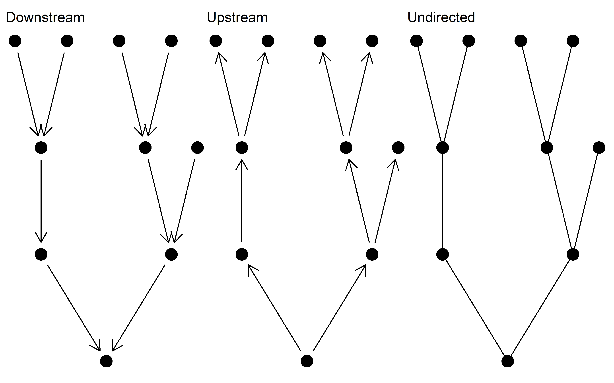
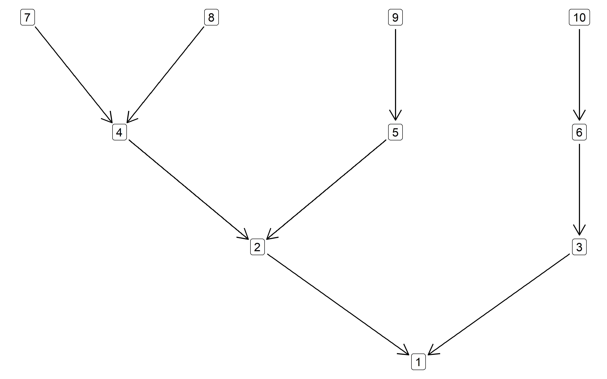
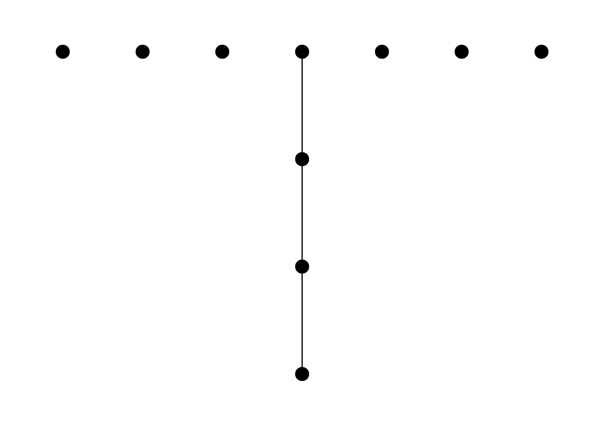
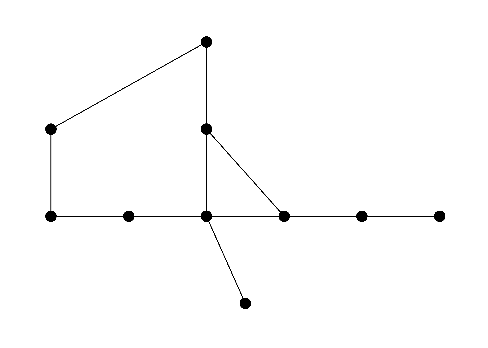
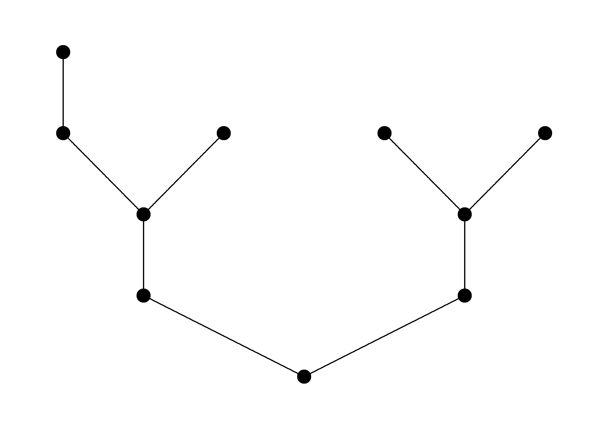

The purpose of this package is to generate Stochastic Branching Networks (SBNs), which are frequently used to represent the branching structure of rivers in ecological models. The functions in this package rely heavily on the igraph package.
The fundamental unit of the SBN package is a downstream directed igraph object. The package contains functions for generating and manipulating these networks. The functions should also work on river networks generated in other packages, which have subsequently been converted to igraph objects (e.g. OCNs).
Aside from downstream directed networks upstream directed and undirected networks can be generated.

SBN is currently only accessible via the GitHub repo.
devtools::install_github("flee598/SBN")
library(SBN)
# generate an SBN with 10 nodes and a branching probability of 0.7
g <- sbn_create(10, 0.7)
g
#> IGRAPH bc182cd D--- 10 9 --
#> + edges from bc182cd:
#> [1] 2->1 3->1 4->2 5->2 6->3 7->4 8->4 9->5 10->6
The SBN package has a handful of functions for basic manipulation of networks.
# identify all headwater nodes
sbn_get_hw(g)
#> 7 8 9 10
#> 7 8 9 10
# get all nodes downstream of node 10
sbn_get_downstream(g, 10)
#> [1] 6 3 1
# get all nodes upstream of node 2
sbn_get_upstream(g, 2)
#> [1] 4 5 7 8 9
# get the id of the outlet node
sbn_get_outlet(g)
#> 1
#> 1
# get the node-to-node distance of an undirected network
sbn_to_mtx(g, method = "n2n_dist_undir")
#> 1 2 3 4 5 6 7 8 9 10
#> 1 0 1 1 2 2 2 3 3 3 3
#> 2 1 0 2 1 1 3 2 2 2 4
#> 3 1 2 0 3 3 1 4 4 4 2
#> 4 2 1 3 0 2 4 1 1 3 5
#> 5 2 1 3 2 0 4 3 3 1 5
#> 6 2 3 1 4 4 0 5 5 5 1
#> 7 3 2 4 1 3 5 0 2 4 6
#> 8 3 2 4 1 3 5 2 0 4 6
#> 9 3 2 4 3 1 5 4 4 0 6
#> 10 3 4 2 5 5 1 6 6 6 0
# downstream directed network to upstream directed network
sbn_change_dir(g, method = "rev")
#> IGRAPH bc75cae DN-- 10 9 --
#> + attr: name (v/c)
#> + edges from bc75cae (vertex names):
#> [1] 1->2 1->3 2->4 2->5 3->6 4->7 4->8 5->9 6->10Calculate the Strahler order of nodes in a network.
# Strahler order
sbn_strahler(g)
#> 1 2 3 4 5 6 7 8 9 10
#> 2 2 1 2 1 1 1 1 1 1For quick plotting I have generally used ggraph with the tree layout. As far as I can tell, the tree algorithm doesn’t play nice with a downstream directed network. Therefore, for plotting purposes you need to reverse the network to an upstream directed one and it will work fine. It is a bit fiddly, but I haven’t found any simple “out-of-the-box” alternative as of yet. Another option is to generate your own node coordinates (as OCNet does), but I haven’t gotten around to implementing that.
# Illustration of plotting an SBN using ggraph
library(SBN)
library(igraph) # for layout_as_tree
library(ggraph) # for ggplot2 style plotting
# generate an SBN
g <- sbn_create(10, 0.7)
# Attempt 1 ------------------------------------------------
# no layout defined - doesn't work
ggraph(g) +
geom_node_point(size = 5) +
geom_edge_link() +
theme_graph()
# Attempt 2 ------------------------------------------------
# try using layout_as_tree layout - doesn't work
l <- igraph::layout_as_tree(g, flip.y = FALSE)
ggraph(g, layout = l) +
geom_node_point(size = 5) +
geom_edge_link() +
theme_graph()
# Attempt 3 ------------------------------------------------
# reverse to upstream directed graph - works
g_rev <- sbn_change_dir(g, method = "rev")
# define layout
l <- igraph::layout_as_tree(g_rev, flip.y = FALSE)
# plot
ggraph(g_rev, layout = l) +
geom_node_point(size = 5) +
geom_edge_link() +
theme_graph()
# Attempt 4 ------------------------------------------------
# add downstream arrows ...
ggraph(g_rev, l) +
geom_node_point(size = 5) +
geom_edge_link(arrow = arrow(length = unit(4, 'mm'), ends = "first"),
end_cap = circle(4, 'mm'),
start_cap = circle(4, 'mm')) +
theme_graph()